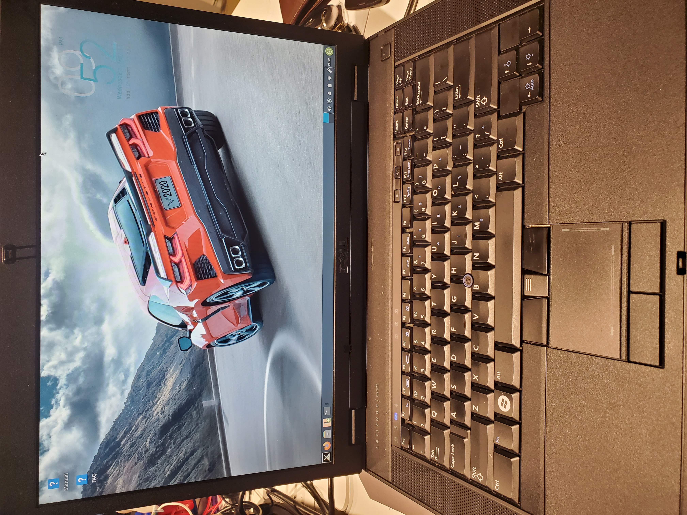
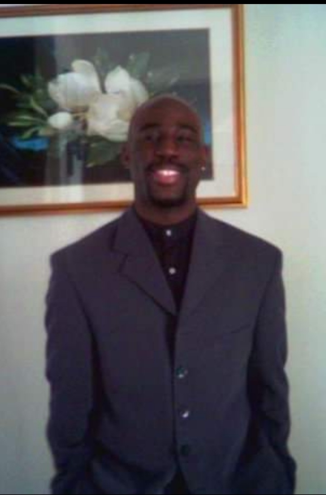

We Create Websites and Webhosting

We Fix old laptops and computers
About Me
Hello. My name is William Sewell. I have an Associates Degree in Software Development. I am currently working on another Assocaites degree in Network Administration. I currently attend California Institute of Arts and Technology (CIAT). I am a retired veteran from Active Duty in the United States Navy from 2015 to 2019 . I am currently a Navy Reservist. I am currently freelance and enjoy what I do. I previously have worked at NWIC, which was a DoD company in San Diego at San Diego State University